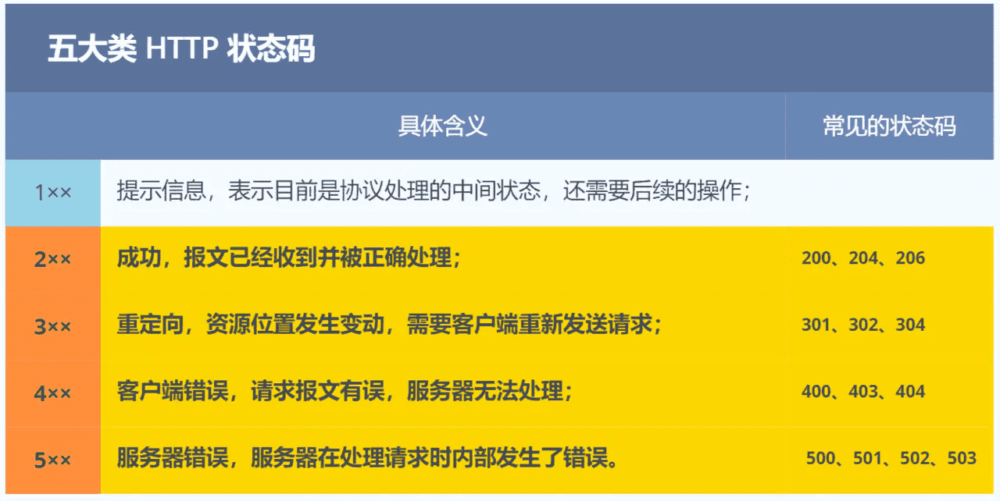
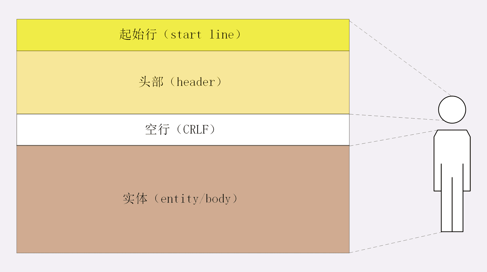
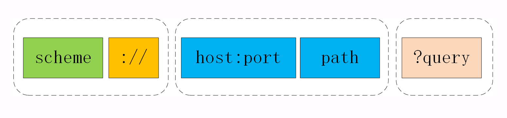

HTTP 是超文本传输协议，也就是HyperText Transfer Protocol。
可以拆分成三部分：
HTTP 是一个在计算机世界里专门在「两点」之间「传输」文字、图片、音频、视频等「超文本」数据的「约定和规范」。

keep-live和TCP中的keepalive的区别
HTTP 协议的请求报文和响应报文的结构基本相同，由三大部分组成：
- 这其中前两部分起始行和头部字段经常又合称为“请求头”或“响应头”，消息正文又称为“实体”，但与“header”对应，很多时候就直接称为“body”。
- HTTP规定报文必须有header，可以没有body，在header之后必须有一个空行（CRLF）。
空行作为头部字段的结束标志，如果多了一个CRLF，服务器解析HTTP报文时会误以为读取完了所有头字段，开始解析报文主题。
- 如果实际上没有实体或者为空，空行不会有太大影响
- 如果不为空，额外空行会破坏HTTP报文的结构，可能会导致服务器无法正确解析报文
主要包括：
这三个部分通常使用空格（space）来分隔，最后要用 CRLF 换行表示结束。
响应报文的起始行，叫做状态行，而不叫做响应行。
主要包括：
请求头和响应头的结构是基本一样的，唯一的区别是起始行。
头部字段是 key-value 的形式，key 和 value 之间用“:”分隔，最后用 CRLF 换行表示字段结束。比如在“Host: 127.0.0.1”这一行里 key 就是“Host”，value 就是“127.0.0.1”。
HTTP头字段灵活，不仅可以使用标准的头，还可以自定义头。
本上可以分为四大类：
常用字段：
概念：
安全很容易分辨：GET和HEAD是只读的，POST和PUT会修改。
幂等：GET和HEAD只读很容易区分，而POST是多次提交数据会创建多个资源不是幂等的，相当于INSERT，而PUT相当于UPDATE所以是幂等的。DELET重复删除同一个资源会提示不存在，所以也是幂等的。
URI是统一资源标识符，本质上是一个字符串，唯一地标记资源的位置或者名字。
URI 最常用的形式，由 scheme、host:port、path 和 query 四个部分组成，但有的部分可以视情况省略。

scheme表示协议名，表示资源使用哪个协议来访问。常见的http，https。://将scheme和后面部分分离。host:port表示资源所在的主机名和端口号
path表示资源所在位置。比如/11-1、/rfc2023?query表示查询资源，是多个“key=value”的字符串，这些 KV 值用字符“&”连接，浏览器和客户端都可以按照这个格式把长串的查询参数解析成可理解的字典或关联数组形式。是对资源附加的额外要求。对重复性的HTTP请求，每次得到数据都一样时，把[请求 + 缓存]放在本地，下次直接读取本地数据。
HTTP 协议的头部有不少是针对缓存的字段，实现缓存技术都要用到Cache-control和expires来判断缓存的过期情况。
在第一次发送请求报文后，服务器在响应报文当中标注了cache-control，当报文过期后，向服务器发送请求时，会更新cache-control。

浏览器判断缓存有没有过期，没有过期会直接使用本地缓存，决定权在浏览器。
Cache-Control相对时间和Expires相对时间来判断资源在客户端的有效期浏览器判断过期的报文是否发生变更，通过本地缓存当中的Last-Modified和ETag两种标签判断。
如果没有变更，会发送304报文告知客户端可以使用本地缓存，否则返回200有更新返回最新的资源，同时更新的标签值。
Last-Modified基于修改时间的方式不够准确。If-Modified-Since 能检查到的粒度是秒级的，使用 Etag就能够保证这种需求下客户端在 1 秒内能刷新多次；当使用 ETag 字段实现的协商缓存的过程：
当浏览器第一次请求访问服务器资源时，服务器会在返回这个资源的同时，在 Response 头部加上 ETag 唯一标识，这个唯一标识的值是根据当前请求的资源生成的；
当浏览器再次请求访问服务器中的该资源时，首先会先检查强制缓存是否过期：
服务器再次收到请求后，
会根据请求中的 If-None-Match 值与当前请求的资源生成的唯一标识进行比较
如果浏览器收到 304 的请求响应状态码，则会从本地缓存中加载资源，否则更新资源。
header + body，易于理解，降低了学习和使用的门槛| HTTP | HTTPS |
|---|---|
| 超文本传输协议 | 超文本传输协议 |
| 明文传输 | 加密传输（TCP和HTTP之间加入了SSL/TLS安全协议） |
| 三次握手后开始传输 | 增加SSL/TLS的握手过程 |
| 默认端口号：80 | 默认端口号：443 |
| 不需要证书 | 需要CA（证书权威机构）申请数字证书 |
在TCP/HTTP之间增加了SSL/TLS协议，解决了明文传输过程中的窃听风险、篡改风险、冒充风险问题。
为了解决信息被窃听的问题，HTTPS 采用的是对称加密和非对称加密结合的「混合加密」方式，使得未经的解密的其他用户只能看到密文。
一般将加密算法分为：
使用对称加密前提是通信双方商量出一个密钥，在这个过程中是传输明文，容易被窃取。
所以有了非对称加密，公钥被窃取时，通过公钥加密的报文，只能被私钥解密。
综合考虑到可靠性和速度，HTTPS采用混合加密方式。
也就是说，用非对称加密算法传输密钥，用对称加密算法传输实际数据。 此密钥一般称为『会话密钥』。
黑客窃取到会话密钥，但是没有私钥解密，以至于在后续无法解密对称加密的数据。
为了保证传输的内容不被更改，计算出要发送内容的一个摘要，接受报文后再计算一遍，对比前后的值是否发生改变来判断内容是否被篡改。
在计算机里会用摘要算法（哈希函数）来计算出内容的哈希值，也就是内容的「指纹」，这个哈希值是唯一的，且无法通过哈希值推导出内容。
计算机网络中常用的摘要算法有：MD5、SHA-1、SHA-256 等。
但是在这个过程中不能保证整个内容和哈希值都被篡改，需要确保内容 + 哈希值都是原始发送的内容。
增加了一个鉴别密钥，获取方式等同于会话密钥，摘要算法的输入变为数据+鉴别密钥，在经过篡改后的数据，另一端收到后会发现解密后鉴别密钥变更，被篡改了。
为了进一步提升安全性，实际上客户端和服务器将使用不同的
会话密钥和鉴别密钥，也就是一共需要四个密钥：
- 用于从客户端发送到服务器的数据的
会话密钥；- 用于从服务器发送到客户端的数据的
会话密钥；- 用于从客户端发送到服务器的数据的
鉴别密钥；- 用于从服务器发送到客户端的数据的
鉴别密钥。
万一服务器的公钥是被黑客伪造的呢？比如经典的『中间人攻击』问题，这里有点复杂具体可以看原文。
为了避免客户端收到了非正规的网站（中间人），需要一个数字证书。
通过数字证书解决中间人攻击的具体过程为：
私钥对这个摘要进行加密，生成一串密文，密文也称为数字签名。数字证书即包含此数字签名和 .csr 中明文信息。CA 把这个证书返回给申请人。公钥去解密签名，得到摘要 1，再利用摘要算法得到明文信息的摘要 2，对比摘要 1 和摘要 2，如果一样，说明证书是合法的，也就是证书里的公钥是正确的，否则说明证书不合法。这里明文信息的摘要2，是可能被篡改的部分，而通过CA公钥解密得到的信息摘要是明确的。
此外认证中心的公钥，一般在操作系统中会内置这些，避免公钥被伪造。
Chrome 浏览器一旦发现一个网站数字证书无效，就会生成如下界面进行提示，如果用户强制访问，则存在一定的风险。（那我经常点开...
根据前面所述，进行一下小结：
会话密钥。鉴别密钥。证书。通信双方在SSL / TLS协议握手的时候，来协商会话密钥和鉴别密钥，以及验证证书的合法性。

为什么第三、第四次握手要发送所有握手报文的摘要呢？
主要原因是防止握手信息被篡改。比如客户端支持的密码套件列表中，有些加密算法较弱，有些加密算法较强，而此密码套件是明文传输的，万一黑客将此密码套件列表进行了修改，只留下一些安全性较低的加密算法，那么服务器就只能从这些安全性较低的加密算法中选择，安全性大大降低。因此需要通过发送摘要的形式防止握手信息被篡改。
为什么不直接发送一个主密钥，而是用两个随机数加一个前主密钥重新生成一个主密钥呢？
主要原因是防止连接重放。如果没有前面两个随机数，仅仅由客户端生成一个主密钥，并通过服务器
公钥加密发送给服务器。那么黑客在嗅探了服务器与客户端之间的所有报文后，可以再次冒充客户端向服务器发送相同的报文（虽然黑客不知道内容是什么），因为报文信息都是之前客户端和服务器验证过的，因此服务器会认为是客户端与其通信，导致又一次连接。
整个 TLS 的握手阶段全部结束。接下来，客户端与服务器进入加密通信，就完全是使用普通的 HTTP 协议，只不过用「会话秘钥」加密内容。
小林coding
但是2.0虽然通过Stream的并发解决了1.0的队头阻塞问题，但是基于TCP实现的面向字节流，当一个报文的前1个字节延迟到达时，其他字节存放在缓冲区，全部到达后应用层才能从内核当中拿到数据。
HTTP/3把下层的TCP协议改成了UDP。
UDP 发送是不管顺序，也不管丢包的，所以不会出现像 HTTP/2 队头阻塞的问题。大家都知道 UDP 是不可靠传输的，但基于 UDP 的 QUIC 协议 可以实现类似 TCP 的可靠性传输。
QUIC 有以下 3 个特点。